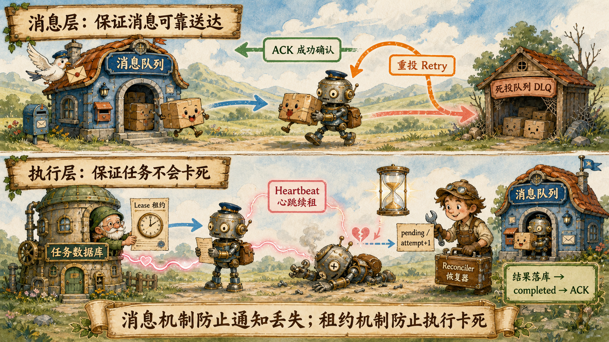

1. 先区分两条生命周期
这次讨论最重要的结论，是不要把“消息被消费”和“任务被正确完成”当成同一件事。
执行生命周期
Lease、Heartbeat、Reconciler回答：哪个 Worker 仍有执行权、任务是否卡死、异常后怎样接管。
消息状态：ready → delivered → acknowledged
↘ retry → dead-letter
任务状态：pending → running → completed
↘ lease expired → pending消息机制保证任务通知不会悄悄丢失；租约机制保证收到通知后的业务执行不会永久卡死。
2. ACK：什么时候才能确认消息
ACK 是 Acknowledgement。Worker 收到消息后，消息中间件先把它视为“正在处理”，直到收到 ACK 才认为消费成功。
message = queue.consume()
result = execute_task(message)
database.save(result)
database.mark_completed(message.task_id)
queue.ack(message) # 最后确认如果刚拿到消息就 ACK，Worker 随后崩溃，队列会认为消息已经完成，但业务结果并不存在，任务会永久丢失。
message = queue.consume()
queue.ack(message) # 错误：确认得太早
result = execute_task(message)
# Worker 在这里崩溃，队列不会再次投递3. 重投：没有 ACK 的消息再次执行
Worker 连接断开、ACK 超时或显式返回可重试错误时，消息重新变成可消费状态，由原 Worker 或其他 Worker 再次领取。
task_1 attempt=1 → Worker 1 超时
↓ 没有 ACK
延迟重新投递
↓
task_1 attempt=2 → Worker 3 接管不能无限立即重试。外部服务故障时，立即循环会制造重试风暴，因此通常使用指数退避：
第 1 次失败 → 5 秒后
第 2 次失败 → 30 秒后
第 3 次失败 → 2 分钟后
第 4 次失败 → 10 分钟后
delay = min(base_delay * 2 ** retry_count, max_delay)队列通常提供的是“至少投递一次”，所以它允许重复；业务侧必须让重复执行安全。
4. 死信队列：一直失败的消息放哪里
参数错误、权限不足、消息格式不兼容等确定性错误，重复多少次都不会自行恢复。超过最大重试次数后，消息进入 DLQ（Dead Letter Queue）。
attempt=1 → 失败
attempt=2 → 失败
attempt=3 → 失败
达到最大重试次数
→ Dead Letter Queue
→ 任务标记 failed / manual_review
→ 告警和人工处理死信不是垃圾桶。它需要保留原消息、错误类型、重试次数、首次与最后失败时间，便于修复代码或数据后重新入队。
{
"research_id": "research_123",
"subtask_id": "task_2",
"attempt": 4,
"error_type": "InvalidPayloadError",
"error_message": "缺少 query 字段",
"first_failed_at": "2026-08-18T12:00:00",
"last_failed_at": "2026-08-18T12:10:00"
}5. 哪些错误应该重试
| 错误 | 处理方式 | 原因 |
|---|---|---|
| 网络断开、请求超时 | 延迟重试 | 外部环境可能恢复 |
| HTTP 429 | 更长延迟并尊重 Retry-After | 服务端正在限流 |
| HTTP 500 / 503 | 指数退避重试 | 服务暂时不可用 |
| 参数缺失或格式错误 | 直接进入死信或失败 | 原消息不变，重试没有意义 |
| 权限不足 | 通常不重试 | 需要修改权限或凭证 |
| 消息版本不兼容 | 死信并告警 | 需要升级消费者或转换数据 |
try:
execute(message)
except RetryableError:
queue.retry(message, delay=calculate_backoff(message.attempt))
except NonRetryableError as error:
queue.send_to_dead_letter(message, error)6. Lease 与 Heartbeat：谁仍然拥有执行权
Lease 是有期限的任务执行权。Worker claim 任务时，数据库记录 worker_id、attempt 和 lease_expires_at，不能只写一个永久的 running。
status running
worker_id worker_3
attempt 1
lease_expires_at 12:01:00Heartbeat 是 Worker 对具体任务的续租，不只是进程健康检查。即使 Worker 进程还活着，某个任务线程卡死、没有续租，这个任务的 Lease 仍会过期。
12:00:00 领取，租约到 12:01:00
12:00:20 心跳，延长到 12:01:20
12:00:40 心跳，延长到 12:01:40
12:00:45 Worker 崩溃，心跳停止
12:01:40 Lease 过期续租必须同时校验 subtask_id + worker_id + attempt + status，防止旧 Worker 给已经被接管的任务续租。
7. Reconciler：它到底调度什么
Reconciler 不是正常业务的主调度器，而是定时巡检和纠偏的后台恢复器。Orchestrator 负责向前推进；Reconciler 负责把卡住或走偏的任务拉回正确轨道。
while True:
reconcile_expired_leases()
reconcile_stuck_workflows()
reconcile_unpublished_outbox()
time.sleep(10)| 数据库实际状态 | 期望状态 | Reconciler 的修复 |
|---|---|---|
| running，但 Lease 已过期 | 必须有有效执行者 | pending、attempt+1、写 Outbox |
| 所有 SubTask completed，父任务仍 researching | 应该进入汇总 | 触发 ready_to_synthesize |
| 报告地址已存在，父任务仍 synthesizing | 应该 completed | 幂等补齐最终状态 |
| planning 长时间没有更新 | 应该继续或明确失败 | 重新调度、失败或告警 |
Reconciler 通常不直接执行 worker.execute()，而是在数据库事务中修复状态、写 Outbox，让正常队列和 Worker 链路重新接手。
8. 两套机制怎样互相兜底
| 机制 | 负责者 | 解决的问题 |
|---|---|---|
| 消息中间件 | 消息是否已经成功处理 | |
| 消息中间件 / 调度系统 | 失败消息何时再次消费 | |
| 消息中间件 | 一直失败的消息如何隔离 | |
| Lease | 任务数据库 | 哪个 Worker 暂时拥有执行权 |
| Heartbeat | Worker + 数据库 | 这一次执行是否仍然活跃 |
| Reconciler | 调度后台服务 | 异常状态如何被发现和修复 |
消息投递 task_1
→ Worker claim，数据库获得 Lease
→ 执行期间持续 Heartbeat
→ Worker 直接崩溃
├─ 没有 ACK：队列可能重新投递
└─ 没有 Heartbeat：Lease 过期
→ Reconciler 生成新 attempt
→ 新 Worker 只有 claim 成功后才能执行队列重投和 Reconciler 可能同时行动，所以数据库 claim 必须是原子条件更新，保证只有一个 Worker 获得合法执行权。
9. Outbox：数据库里的可靠发件箱
业务状态写数据库、消息发到队列，是对两个系统的双写。没有 Outbox，服务可能在两步之间崩溃：
1. INSERT research_subtasks 成功
2. 准备 publish subtask.ready
3. 服务崩溃
结果：数据库有 pending 任务，队列没有消息Outbox 是数据库中的“待发送消息表”。业务记录和 Outbox 记录放在同一个事务，保证二者一起成功或一起失败：
BEGIN;
INSERT INTO research_subtasks (...);
INSERT INTO outbox_events (event_type, payload, status)
VALUES ('subtask.ready', '{...}', 'pending');
COMMIT;
Outbox Publisher:
扫描 pending → publish → 标记 publishedPublisher 如果“发送成功但标记 published 前崩溃”，消息会重复发送。因此 Outbox 解决的是不漏发，消费端幂等负责吸收重复发送。
Outbox 不是消息队列：它是数据库里的可靠发件箱；消息中间件才是真正的运输系统。
10. 重投时，怎样让副作用只生效一次
工业系统通常无法保证任务代码只运行一次，而是保证任务可以运行多次、同一个业务副作用最终只生效一次，也叫 effectively-once outcome。
稳定幂等键必须跨 attempt 不变
idempotency_key =
research_id + ":" + subtask_id + ":" + effect_type
research_123:task_2:send_report_email重试时 attempt=1、2、3 会变化，但“发送这份报告邮件”仍是同一个业务动作，所以不能把 attempt 放进业务幂等键。
本地数据库副作用：唯一约束 + 事务
BEGIN;
INSERT INTO processed_effects (idempotency_key)
VALUES ('research_123:task_2:save_result')
ON CONFLICT DO NOTHING;
-- 只有首次插入成功时才修改业务数据
UPDATE business_table ...;
UPDATE research_subtasks SET status = 'completed' ...;
COMMIT;
ACK message;外部副作用：把幂等键传给下游
POST /payments
Idempotency-Key: research_123:task_2:charge第一次调用真正扣款并保存结果；相同幂等键再次调用时，下游不再扣款，只返回第一次结果。短信、邮件、支付、建单等外部接口最好原生支持幂等键或业务单号查询。
下游不支持幂等时的危险窗口
1. 短信发送成功
2. Worker 准备写 processed_effects
3. Worker 崩溃
本地数据库没有成功记录，但短信已经发出。
重投后可能再次发送。本地事务无法包住外部系统。可靠程度依次是：下游原生幂等键、按业务单号查询结果、Saga 补偿、最后才是接受可能重复并通过业务规则去重。
11. attempt 与 fencing：拒绝旧 Worker
idempotency_key 防重复副作用，attempt 则是执行版本，也叫 fencing token，用于拒绝已经失去 Lease 的旧 Worker。
Worker A：attempt=1，心跳停止
Reconciler：Lease 过期，创建 attempt=2
Worker B：获得 attempt=2
Worker A：网络恢复，迟到提交 attempt=1UPDATE research_subtasks
SET status = 'completed', result = :result
WHERE id = :subtask_id
AND status = 'running'
AND worker_id = :worker_id
AND attempt = :attempt;数据库当前是 Worker B 的 attempt=2，Worker A 携带 attempt=1，更新行数为 0，因此旧结果不能覆盖新结果。
| 标识 | 是否跨重试变化 | 用途 |
|---|---|---|
event_id | 每个事件唯一 | 防止同一事件重复消费 |
idempotency_key | 同一业务动作保持不变 | 防止业务副作用重复生效 |
attempt | 每次接管递增 | 拒绝旧 Worker 的迟到执行 |
12. 一条完整的工业链路
Orchestrator 数据库事务
→ 创建父任务和 SubTask
→ 写入 Outbox
Outbox Publisher
→ 发布消息到持久化队列
Message Queue
→ 投递消息，但等待 ACK
Worker
→ 原子 claim：pending → running
→ 获得 Lease + attempt
→ Heartbeat 续租
→ 使用稳定 idempotency_key 执行副作用
→ 结果与 completed 状态落库
→ 最后 ACK
失败分支
→ 临时错误：指数退避重投
→ 永久错误：DLQ + failed/manual_review
→ Worker 崩溃：无 ACK + 心跳停止
→ Reconciler：Lease 过期、attempt+1、写 Outbox
→ 旧 Worker 迟到：fencing token 拒绝
最终目标
→ At-least-once Delivery
+ Idempotent Processing
= Effectively-once Outcome| 检查项 | 必须回答的问题 |
|---|---|
| ACK 时机 | 是否在结果和 completed 状态安全提交之后？ |
| 重试策略 | 是否区分临时错误与永久错误，并设置退避和上限？ |
| 死信处理 | 是否同步更新任务失败状态、告警并支持人工重放？ |
| 任务执行权 | claim 是否原子，Lease 是否由任务级 Heartbeat 续期？ |
| 异常恢复 | Reconciler 是否能修复租约过期和停滞工作流？ |
| 可靠发布 | 业务数据和 Outbox 是否处于同一数据库事务？ |
| 重复副作用 | 是否有跨 attempt 稳定的幂等键和下游幂等支持？ |
| 迟到执行 | 是否用 attempt/fencing token 拒绝旧 Worker？ |
真正的可靠性不是依赖“消息只来一次”或“Worker 永不崩溃”，而是允许重复、崩溃和重启发生，同时让最终业务状态仍然正确。